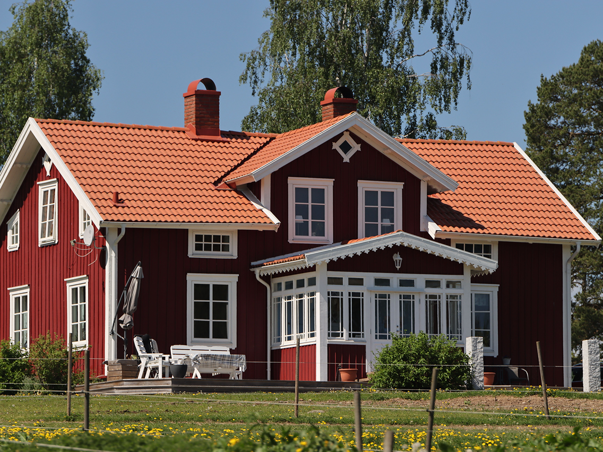
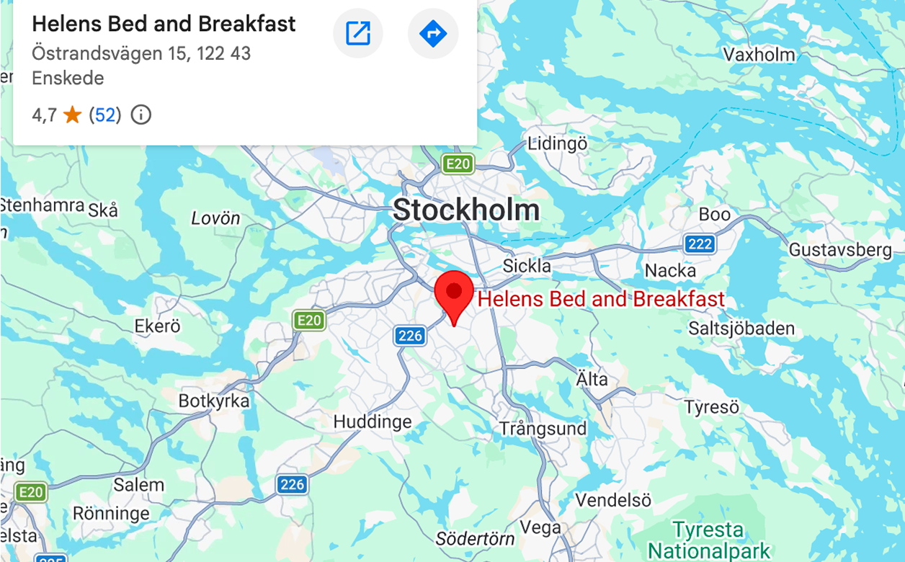

Who is Helen?
From art teacher to host of travellers
In 1998 Helen left her career as an art teacher and travelled to Tibet with a video camera, making a documentary about life in an exile monastery. Longer stays in Mexico, India and Indonesia followed.
Those encounters stayed with her. In 2003 she opened her home to travellers, so the meetings could continue in Stockholm.
The house and garden
A typical Swedish home in a green, quiet neighbourhood with fresh air and little traffic. A small woodland with walking paths, a bakery and a restaurant is within walking distance.
- Wild garden with several seating areas
- Parking on site
- Several restaurants within 1.5 km
- We recycle and care about the environment

Getting here
- Svedmyra metro station 800 m
- Globen arena2 km · 3 stops
- Stockholmsmässan, Älvsjö3.5 km
- Södermalm3.6 km
- Gamla Stan4.9 km
- Central Station5.5 km · 5 stops
About 20 minutes by public transport or 10 by car from the city centre. Airport buses and Arlanda Express connect to the metro.

Thinking about booking?
Helen is happy to help with any questions you might have.